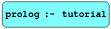

Appel, K.R., and Haken, W., Every planar map is four colorable, Bull. Am. Math. Soc., vol. 82, pp. 711-712, 1976.
Apt, K., and Etalle, S., On the Unification Free Prolog Programs, Computer Science/Department of Software Technology, Report CS-R9331, May 1993.
Baader, and F., Snyder, W., Unification Theory, Chapter 8 of Handbook of Automated Reasoning, edited by Alan Robinson and Andrei Voronkov, Elsevier Science Publishers , 2001.
Bratko, I., Prolog Programming for Artificial Intelligence, Addison-Wesley International Computer Science Series, 1986.
Campbell, J.A., ed., Implementations of Prolog, Wiley, 1984.
Chang, C., and Lee, R. C., Symbolic Logic and Mechanical Theorem Proving, Academic Press, 1973.
Clocksin, W.F., and Mellish, C.S., Programming in Prolog, Springer-Verlag, 1981, 1992.
Clocksin, W.F., Cause and Effect: Prolog programming for the working programmer, Springer-Verlag, 1997.
Clocksin, W.F., Programming in Prolog: using the ISO standard , Springer-Verlag, 2003.
Covington, M. A.,Nute, D., and Vellino, A. Prolog Programming in Depth, Scott, Foresman and Company, Glenview, IL, London, 1988.
DeGroot, D., and Lindstrom, G., Logic Programming, Relations, and Equations, Prentice- Hall, 1986.
Fisher, J.R., Semantic trees for disjunctive logic programs, Intelligent Systems, Proc. Third Golden West International Conference, ed. E.A. Yfantis, pp.291-305, Klewer Academic Publishers, 1995.
Fisher, J.R., Logic program based action specifications, Proc. 1995 Symposium on Applied Computing (SAC'95), Nashville, Tenn., pp.248-52.
Fisher, J.R., and Tran, L., A Visual Logic, Proc. 1996 Symposium on Applied Computing (SAC'96), Philadelphia, Pa., pp.17-21.
Gazdar, G., and Mellish, C., Natural Language Processing in Prolog, Addison-Wesley, 1989.
Giannesini, F, Kanoui, H, Pasero, R., and van Caneghem, M, Prolog, Addison-Wesley International Computer Science Series, 1986.
Green, C., Theorem-proving by resolution as a basis for question-answering systems, in B. Meltzer and D. Michie, eds., Machine Intelligence 4, 183-205, Edinburgh University press, 1968.
Kowalski, R.A., Logic for problem solving, DCL Memo 75, Department of Artificial Intelligence, University of Edinburgh, Scotland, 1974.
Kowalski, R.A., Logic for Problem Solving, North Holland, 1979.
Kowalski, R.A., and Kuehner, D., Linear Resolution with selection function, Artificial Intelligence, (2) 227-60, 1971.
Lloyd, J.W., Foundations of Logic Programming, Springer-Verlag, 1984, 2nd ed. 1987.
Nilsson, N., Principles of Artificial Intelligence, Tioga, 1980.
O'Keefe, Richard A.,The Craft of Prolog, MIT Press, 1990.
Pereira, Fernando C.N., and Shieber, Stuart M., Prolog and Natural-Language Analysis, CSLI, 1987.
Robinson, J.A., A machine-oriented logic based on the resolution principle, Journal A.C.M., (12) 23-44, 1965.
Rowe, W.C., AI Through Prolog, Prentice Hall, 1988.
Shoham, Y., Artificial Intelligence Techniques in Prolog, Morgan Kaufmann Publishers, 1994.
Sterling, Leon, and Shapiro, Ehud, The Art of Prolog, MIT Press, 1986.
Van Le, T., Prolog Programming, Wiley, 1993.
Winston, Patrick Henry, Artificial Intelligence, 2nd. ed., Addison-Wesley, 1984.
Winston, P.H., and Horn, P., Lisp, Addison-Wesley, 1985. 111